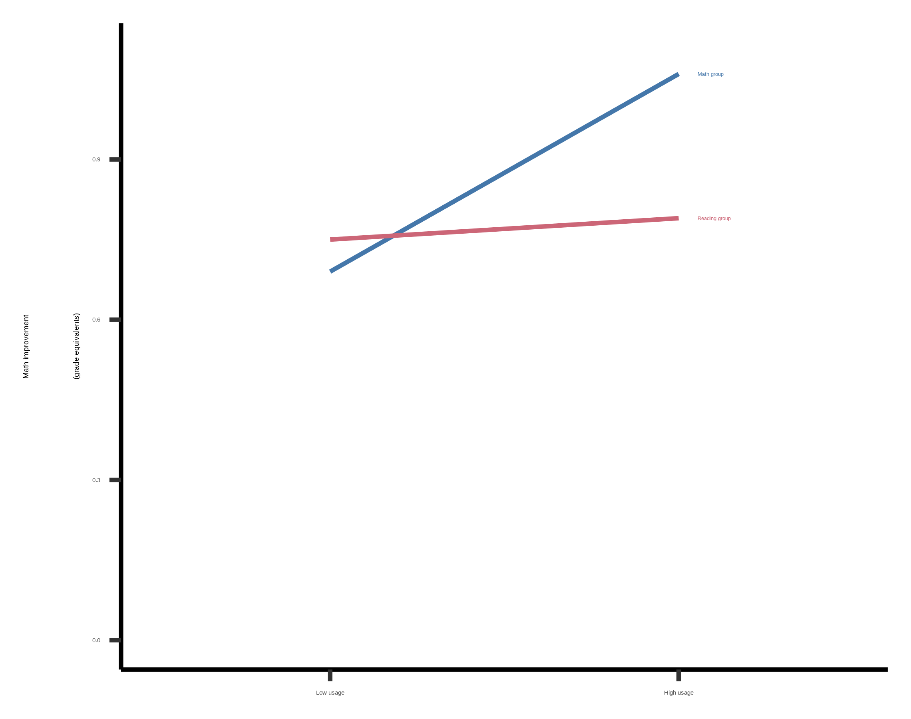
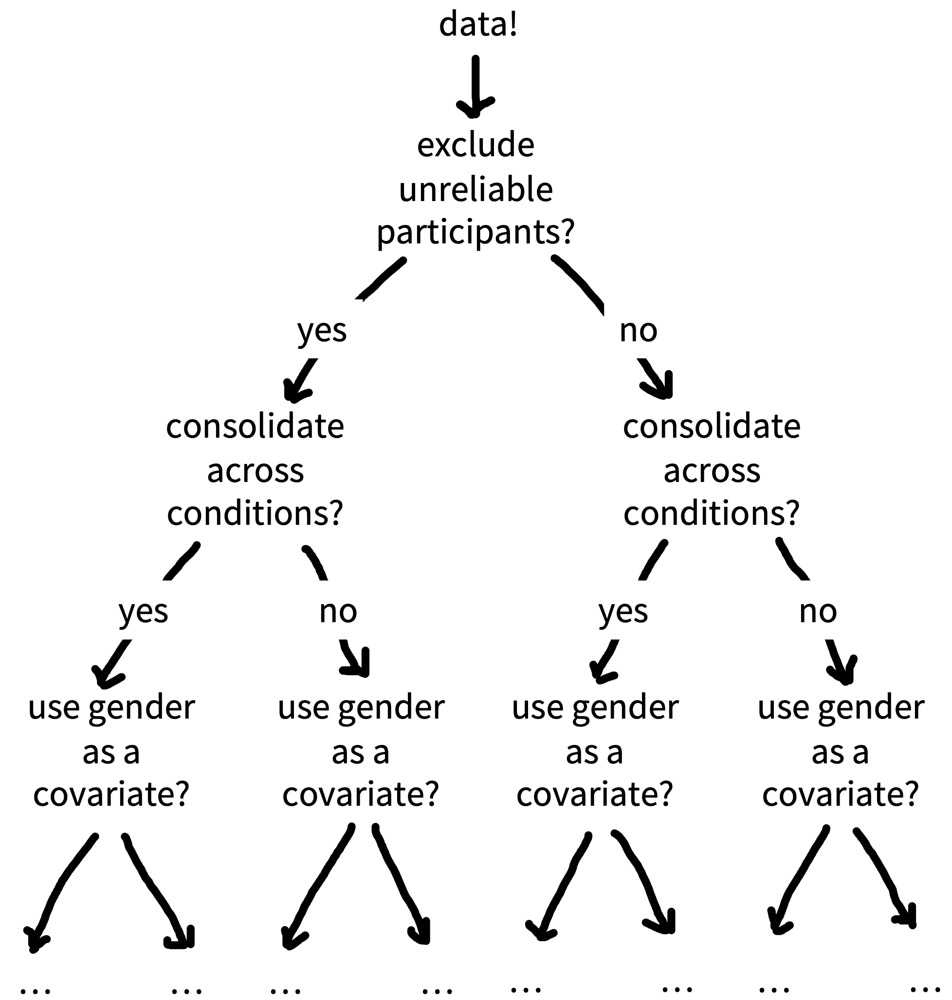
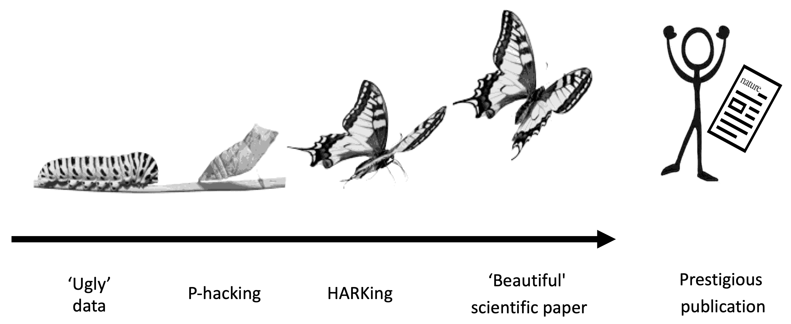
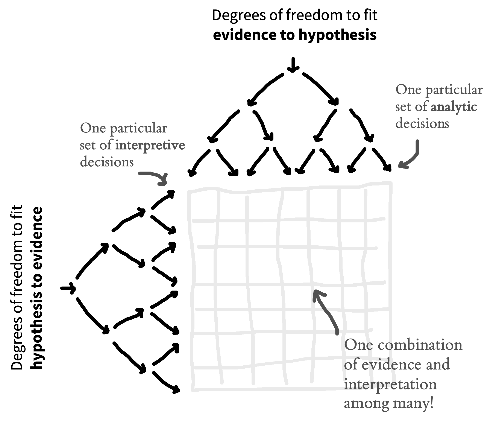
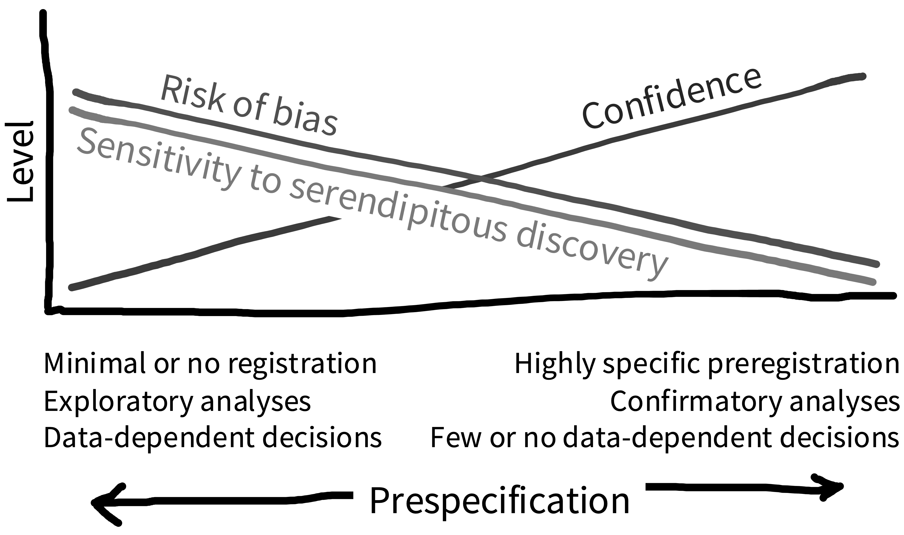
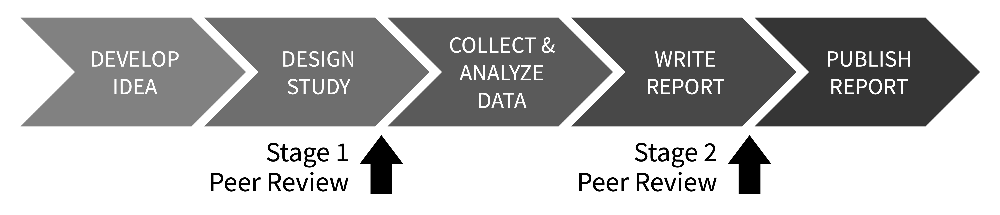

11 预注册
注记learning goals
- 识别 researcher degrees of freedom 的危险
- 理解探索性和验证性研究模式之间的差异
- 说明预注册如何降低偏差风险并提高透明度
如果事先没有计划，数据分析就可能近似于一种投射技术，比如 Rorschach，因为研究者可以把自己的期待、愿望或偏差投射到数据上，并从数据中提取出几乎任何他想要的“发现”。
—Theodore X. Barber (1976 [1927])
第一条原则是，你绝不能欺骗自己，而你自己正是最容易被欺骗的人……当你没有欺骗自己之后，不欺骗其他科学家就很容易了。之后你只需要按常规方式诚实即可。
—Richard Feynman (1974)
本书上一部分聚焦于规划研究，尤其是围绕测量、设计和抽样做决策。接下来这一部分，我们转向执行研究时的具体事务。我们从预注册开始（本章），然后讨论数据收集的后勤安排（章 12）和项目管理（章 13）。这些章节触及透明度和减少偏差两个主题，重点是如何记录和组织数据收集。
先从简单记录设计和分析选择开始。虽然设计和分析实验有很多错误方式，但并不存在单一的正确方式。事实上，多数研究决策都有许多可辩护的选择，有时称为“researcher degrees of freedom”。 例如，你会在 20、200 还是 2,000 名参与者之后停止收集数据？你会移除离群值吗？又会如何定义它们？你会做 subgroup analyses，看看结果是否受性别、年龄或其他因素影响吗？
考虑一个简化的假想情形：你必须做出五个分析决策，每个决策都有五个可辩护的选择。仅此就会产生 3,125（\(5^5\)）种独特的数据分析方式！如果你事后做这些决策（在观察数据之后），就有一个危险：你的决策会受到分析结果影响（“data-dependent decision making”），并偏向于那些更符合你个人偏好的结果。现在回想你上次读研究论文的时候。在数据所有可能的分析方式中，你怎么知道研究者不是只选择了最有利于他们心爱假设的那种方式？
本章会说明，实验设计、分析、报告和解释中的灵活性，再加上数据依赖的决策，为什么会引入偏差，并导致科学家欺骗自己和彼此。我们还会学习预注册，也就是在观察数据之前写下并注册研究决策的过程。预注册与我们的两个主题交叉：它可以用于在数据分析中减少偏差，也可以提供其他科学家恰当评估和解释我们结果所需的透明度 (Hardwicke 和 Wagenmakers 2023)。
注记case study
未披露的分析灵活性？
面向儿童的教育 app 是一个巨大市场，但相对而言，很少有随机试验考察它们是否或何时会带来教育收益。为了填补这个重要空白，Berkowitz 等 (2015) 报告了一项高质量现场实验，研究一个免费教育 app “Bedtime Math at Home”。参与者在整个学年中被随机分配到数学或阅读条件。关键是，除了随机分配，这项研究还包含数学和阅读成就的标准化测量。这些测量让作者可以以年级水平等值计算效应；从政策角度看，这是一个有意义的单位。
关键结果见 图 11.1。频繁使用数学 app 的家庭，在数学上显示出比控制组更大的进步。虽然这个发现看起来很醒目，但图并没有直接可视化主要目标因果效应，也就是研究条件对数学分数的效应大小。相反，数据被呈现为特定 app 使用水平下的估计效应。
由于作者公开了数据，Frank (2016) 可以做一个简单分析来考察目标因果效应。如果不按使用量拆分数据，也不按协变量调整，干预对数学表现没有显著主效应（图 11.2）。由于这个分析不利于主要干预，而且论文中没有报告它，因此有可能作者以多种方式分析了数据，并选择呈现一个有利于目标假设的分析。
就像预注册兴起之前的许多论文一样，我们无法确切知道 Berkowitz 等 (2015) 中报告的分析是否受到了作者期望结果的影响。正如下面会看到的，这类数据依赖的分析可能导致所报告效应中的实质性偏差。关于论文分析策略的不确定性，可以通过预注册来避免。在这个例子中，预注册会让读者相信分析决策没有受到数据影响，从而提高这项本来高质量研究的价值。
11.1 迷失在分叉路径花园中
可视化 researcher degrees of freedom 的一种方式，是把它想象成一棵巨大的决策树，或“分叉路径花园”（图 11.3）。每个节点代表一个决策点，每个分支代表一个可辩护的选择。穿过花园的每一条独特路径，最终都会通向一个单独的研究结果。

由于科学观察通常同时包含噪声（这个样本独有的随机变异）和信号（会在其他样本中再次出现的规律），这些路径中有一些不可避免地会通向误导性结果（例如夸大的效应量、夸张的证据或 false positives）。你可能探索的花园路径越多，遇到误导性结果的概率就越高。
统计学家把这个问题称为多重性（多重比较）问题。正如我们在 章 6 中谈到的，多重性可以在一定程度上通过统计对策处理，比如 Bonferroni correction；不过，这些调整方法需要考虑你本可以走过的每一条路径 (Gelman 和 Loken 2014; de Groot 2014 [1956])。当你一边处理数据，一边在分叉路径花园中导航时，很容易忘记，甚至根本意识不到，你本可以走过哪些路径，因此这些方法就无法再有效使用。
在某些特定情境中，信噪比会更糟；这在心理学中很常见，例如效应量小、变异高、测量误差大 (Ioannidis 2005)。Researcher degrees of freedom 可能在一定程度上受到强理论 (Oberauer 和 Lewandowsky 2019)、共同体方法规范或重复研究约束，不过这些约束可能更多是隐性的而非显性的，而且仍然会留下大量灵活决策空间。
11.1.1 数据依赖的分析
当研究者在数据分析期间穿行于分叉路径花园时，他们的选择可能受到数据影响（data-dependent decision-making），从而引入偏差。如果研究者正在寻找某种特定结果（见下面的 Depth 框），他们就更可能沿着把自己引向那个方向的分支前进。
你可以把这想得有点像玩“hot（）or cold（）”游戏，其中 表示这个选择会让研究者更接近想要的总体结果， 表示这个选择会让他们离它更远。每次研究者到达一个决策点，都会尝试其中一个分支，并获得这个选择如何影响结果的反馈。如果反馈是 ，他们就走这个分支。如果答案是 ，他们就尝试另一个分支。如果他们走到一条完整路径的尽头，而结果是 ，也许甚至会回头，在更早的路径上尝试不同分支。这种策略会产生偏差风险，因为它系统性地把结果推向研究者偏好的方向 (Hardwicke 和 Wagenmakers 2023)。1
1 我们说“偏差风险”，而不是直接说“偏差”，是因为在多数科学语境中，我们没有已知 ground truth 可以拿来比较结果。因此，在任何具体情境中，我们不知道数据依赖决策实际上在多大程度上偏倚了结果。
注记depth
只是人类：认知偏差和倾斜的激励
故事书里常把科学家描绘成客观、理性且冷静无私的真理仲裁者 (Veldkamp 等 2017)。但现实中，科学家也只是人：他们有自尊、有职业野心，也要付房租！所以，即使我们确实想达到故事书里的形象，也必须承认，我们的决策和行为同样受一系列认知偏差和外部激励影响，这些东西可能把我们带离那个目标。先看几个可能让科学家误入歧途的相关认知偏差：
确认偏差：以强化既有信念的方式，优先寻找、回忆或评估信息 (Nickerson 1998)。
后见之明偏差：相信过去事件本来就更可能发生，而不是承认在事件发生前我们实际认为它有多可能（“我早就知道！”）(Slovic 和 Fischhoff 1977)。
动机性推理：把先前决策合理化，使它们被框定在有利光线下，即便它们原本并不理性 (Kunda 1990)。
- Apophenia：在噪声中检测出看似有意义的模式 (Gilovich, Vallone, 和 Tversky 1985)。
更糟的是，科学生态系统的激励结构常常又增加了把事情弄错的额外动机。经费、奖项和发表声望的分配，常常基于研究结果的性质，而不是研究质量 (Smaldino 和 McElreath 2016; Nosek, Spies, 和 Motyl 2012)。例如，许多学术期刊，尤其是那些通常被认为最有声望的期刊，似乎偏好新颖、阳性且统计显著的结果，而不是增量式、阴性或零结果 (Bakker, Dijk, 和 Wicherts 2012)。此外，还有压力要求文章写出简洁、连贯且有说服力的叙事 (Giner-Sorolla 2012)。这组力量激励科学家追求“令人印象深刻”而不是正确，并鼓励 questionable research practices。 通过反复 \(p\)-hacking 和 HARKing 来打造一篇“漂亮”科学论文的过程，被称为 “Chrysalis Effect” (O’Boyle, Banks, 和 Gonzalez-Mulé 2017)，见 图 11.4。

总之，科学家的人类弱点以及科学生态系统有缺陷的激励，凸显了报告研究发现时透明度和智识谦逊的必要性 (Hoekstra 和 Vazire 2021)。
在最严重的情况下，研究者可能尝试多条路径，直到获得想要的结果，然后选择性报告这个结果，而不提他们曾尝试过其他几种分析策略（也称为 \(p\)-hacking， 这是我们贯穿全书讨论过的一种实践）。2 你可能还记得 章 3 中这个做法的一个例子：参与者在听 The Beatles 的 “When I’m 64” 时，似乎变年轻了。另一个显示分叉路径花园会造成多大损害的例子，来自在一条死掉的大西洋鲑鱼中“发现”脑活动 (Bennett, Miller, 和 Wolford 2009)！研究者故意利用 fMRI 分析流程中的灵活性，并避免多重比较校正，从而在只有死鱼的地方找到“脑活动”（图 11.5）。
11.1.2 结果已知之后再提出假设
除了实验设计和分析中的自由度，研究者如何解释研究结果也存在额外灵活性。如 章 2 所讨论，理论可以用许多不同方式容纳甚至相互冲突的结果，例如提出辅助假设来解释为什么某个特定数据点很特殊。
在观察数据之后选择或发展假设的做法，被称为 “hypothesizing after the results are known”，或 “HARKing” (Kerr 1998)。HARKing 可能有问题，因为它扩展了分叉路径花园，并帮助正当化各种额外设计和分析决策（图 11.6）。例如，你可能想出一个解释：为什么某个干预对男性有效但对女性无效，从而为基于性别的事后 subgroup analysis 提供理由（见 Case study 框）。

HARKing 到底在多大程度上有问题，仍有争议 (见 Hardwicke 和 Wagenmakers 2023)。至少，诚实说明假设是在观察数据之前还是之后发展出来的，非常重要。
但等一下！如果数据中确实有有趣结果，寻找它们难道不是好事吗？我们不应该“让数据说话”吗？答案是：是的！但关键是要理解探索性和验证性研究模式之间的区别。3 验证意味着在你看到数据之前做研究决策，而探索意味着在你看到数据之后做研究决策。
3 在实践中，单个研究可能同时包含探索性和验证性方面，所以我们把它们描述为不同“模式”。
关于探索性研究，最需要记住的是：（1）你需要意识到数据依赖决策会增加偏差风险，并据此校准自己对结果的信心；（2）你需要诚实告诉其他研究者你的分析策略，这样他们也能意识到偏差风险，并据此校准他们对结果的信心。下一节中，我们会学习预注册如何帮助我们做出探索性研究和验证性研究之间这个重要区分。
11.2 用预注册降低偏差风险、提高透明度并校准信心
你可以通过在看到数据之前做研究决策，来对抗 researcher degrees of freedom 和数据依赖决策的问题，就像在开始旅程之前先规划好穿过分叉路径花园的路线 (Wagenmakers 等 2012; Hardwicke 和 Wagenmakers 2023)。如果你坚持走计划路线，就消除了决策受数据影响的可能性。
预注册是在分析数据之前（也常常是在收集数据之前），在公开注册库中声明研究决策的过程。预注册确保你的研究决策独立于数据，从而降低上述问题带来的偏差风险。预注册也会向他人透明传达你原本计划了什么，帮助他们判断偏差风险，并校准自己对研究结果的信心。换句话说，预注册可以劝阻研究者从事 \(p\)-hacking 和 HARKing 这类 questionable research practices，因为他们需要对自己的原始计划负责，同时也为恰当评估和解释研究提供所需语境。

预注册并不要求你提前指定所有研究决策，只要求你透明说明什么是计划好的、什么不是。这个透明度有助于区分研究中哪些方面是探索性的，哪些是验证性的（图 11.7）。在其他条件相同的情况下，我们应该对验证性结果更有信心，因为偏差风险较低。探索性结果的偏差风险更高，但它们也对偶然（意外）发现更敏感。因此，验证模式最适合检验假设，探索模式最适合生成假设。所以，探索性和验证性研究都是有价值的活动；关键只是要区分它们 (Tukey 1980)！预注册通过清楚分离二者，提供了两全其美的方案。
除了上述收益，预注册还可能通过鼓励更仔细地关注研究规划来提高研究质量。我们发现，撰写预注册的过程确实有助于促进合作者之间的沟通，并能在时间和资源被浪费到糟糕设计的研究之前，发现可以处理的问题。详细的前期规划也可以创造获得有用共同体反馈的机会，特别是在 registered reports（见下面的 Depth 框）语境中，专门的同行评审会在研究甚至尚未开始之前评估你的研究。
注记depth
预注册和它的朋友们：处理 researcher degrees of freedom 的工具箱
有几个有用工具可以补充或扩展预注册。一般来说，我们建议这些工具与预注册结合使用，而不是取代预注册，因为预注册提供了关于研究和规划过程的透明度 (Hardwicke 和 Wagenmakers 2023)。其中前两个工具在 章 7 最后一节中有更详细讨论。
Robustness checks。 Robustness checks（也称为 “sensitivity analyses”）评估分叉路径花园中不同决策选择如何影响最终结果模式。当你必须在几个可辩护的分析选择之间做取舍，而它们彼此没有明显优劣，或各有互补优缺点时，这个技术尤其有用。例如，你可能用三种不同缺失数据处理方法运行三次分析。稳健结果不应在这三个不同选择之间有实质变化。
Multiverse analyses。 最近，一些研究者开始运行大规模 robustness checks，称为 “multiverse” (Steegen 等 2016) 或 “specification curve” (Simonsohn, Simmons, 和 Nelson 2020) analyses。我们在 章 7 中稍微讨论过这些方法。 有些人认为，这类大规模 robustness checks让预注册变得多余；毕竟，如果你可以探索所有路径，为什么还要预先指定单一路径 (Rubin 2020; Oberauer 和 Lewandowsky 2019)？但解释 multiverse analysis 的结果并不直接；例如，所有决策选择似乎不太可能同样可辩护 (Giudice 和 Gangestad 2021)。此外，如果 multiverse analyses 没有预注册，那么它们会引入 researcher degrees of freedom，并创造选择性报告的机会，从而增加偏差风险。
Held-out sample。一种同时受益于探索性和验证性研究模式的选择，是把数据分成训练样本和测试样本。（测试样本通常称为 “held out”，因为它被从探索过程中“留出”。）你可以在训练样本中以探索模式生成假设，并以此为基础，在 held-out sample 中预注册验证性分析。这个策略的一个明显缺点是，拆分数据会降低 statistical power， 但在数据充足的情况下，包括许多机器学习场景中，这个技术是金标准。
Masked analysis（传统上称为 “blind analysis”）。有时，数据收集期间可能出现你在预注册计划中没有预料到的问题，例如缺失数据、流失，或随机化失败。你如何诊断并处理这些问题，同时不通过数据依赖分析增加偏差风险？一个选择是 masked analysis，它会伪装与结果有关的数据关键方面（例如打乱条件标签或加入噪声），同时仍允许一定程度的数据检查 (Dutilh, Sarafoglou, 和 Wagenmakers 2019)。在诊断出问题后，你可以调整预注册计划，而不增加偏差风险，因为你的决策没有受到结果影响。
Standard operating procedures。共同体规范，也许是在你的研究领域或实验室层面，可以成为 researcher degrees of freedom 的自然约束。例如，你所在共同体可能有一种处理离群值的普遍接受方法。你可以通过把这些约束写在 standard operating procedures（SOP） 文档中，让它们显性化；这有点像一个活的 meta-preregistration (Lin 和 Green 2016)。
Open lab notebooks。维护实验室笔记本可以是记录研究项目进展中各种决策的有用方式。预注册有点像在项目开始时给你的实验室笔记本拍一张快照，那时你写下的还只有研究计划。公开你的实验室笔记本，是透明记录研究以及偏离预注册计划之处的好方法。
Registered reports。 Registered reports（图 11.8）是一种文章格式，它把预注册直接嵌入发表流程 (Chambers 和 Tzavella 2020)。其想法是，你把预注册 protocol 提交给期刊，并在研究甚至尚未开始之前接受同行评审。如果研究获批，期刊同意发表它，无论结果如何。这与传统发表模型有根本不同；在传统模型中，同行评审和期刊是在研究完成之后且结果已知时评估你的研究。由于研究是否接受发表独立于结果，registered reports 可以提供预注册的收益，同时额外防止 publication bias。 它们也提供了很好的机会，让你在仍能修改研究设计时获得反馈！

11.3 如何预注册
高风险研究（如医学试验）必须预注册 (Dickersin 和 Rennie 2012)。2005 年，一个大型国际医学期刊联盟决定不发表未注册试验。经济学学科也有强烈的研究注册规范（见例如 https://www.socialscienceregistry.org）。但预注册对心理学来说还相当新 (Nosek 等 2018)，而且仍然没有标准做法；如果你正在做预注册，就已经在前沿了！
我们建议使用 Open Science Framework（OSF） 作为你的注册库。OSF 是心理学中最受欢迎的注册库之一，而且你可以在这个平台上做很多其他有用的事来提高研究透明度，例如分享数据、材料、分析脚本和 preprints。在 OSF 上，可以“注册”你上传的任何文件。当你注册一个文件时，它会创建一个带时间戳、只读的副本，并生成专用链接。你可以把这个链接加入报告研究的文章中。
| Question | |||
|---|---|---|---|
| 1 | Data collection. Have any data been collected for this study already? | ||
| 2 | Hypothesis. What’s the main question being asked or hypothesis being tested in this study? | ||
| 3 | Dependent variable. Describe the key dependent variable(s) specifying how they will be measured. | ||
| 4 | Conditions. Which conditions will participants be assigned to? | ||
| 5 | Analyses. Specify exactly which analyses you will conduct to examine the main question/hypothesis. | ||
| 6 | Outliers and Exclusions. Describe exactly how outliers will be defined and handled, and your precise rule(s) for excluding observations. | ||
| 7 | Sample Size. How many observations will be collected, or what will determine sample size? No need to justify decision, but be precise about exactly how the number will be determined. | ||
| 8 | Other. Anything else you would like to preregister (e.g., secondary analyses, variables collected for exploratory purposes, unusual analyses planned). |
预注册的一种方式，是撰写一份 protocol 文档，指定研究理由、目标或假设、方法和分析计划，然后注册该文档。4 如果你愿意，OSF 也有一组专门的预注册模板可供使用。表 11.1 展示了这类模板的一个大纲。这些模板常常针对特定研究类型的需要而定制。例如，有用于一般定量心理学研究的模板 (“PRP-QUANT”; Bosnjak 等 2022)、认知建模模板 (Crüwell 和 Evans 2021)，以及二手数据分析模板 (Akker 等 2019)。5
4 你可以把 study protocol 想成有点像一篇没有结果和讨论部分的研究论文（这里是我们自己一项研究的例子：https://osf.io/2cnkq）。
5 OSF 界面可能会变化，但目前这份指南会带你完成创建预注册的一系列步骤：https://help.osf.io/article/158-create-a-preregistration。
一旦预注册了计划，你就去运行研究并报告结果，对吧？嗯，希望如此……但事情可能不会那么简单。忘记在计划中包含某些东西，或因为意外情况不得不偏离计划，是相当常见的。预注册在实践中其实可能很难 (Nosek 等 2019)。
不过别担心。记住，预注册的关键目标之一是透明度，以便他人能够评估和解释研究结果。如果你决定偏离原计划，并进行数据依赖分析，那么这个决定可能增加偏差风险。但如果你向读者透明传达这个决定，他们就可以适当校准自己对结果的信心。你甚至可以把计划内和计划外分析都作为 robustness check 运行（见 Depth 框），以评估这个特定选择在多大程度上影响结果。
报告研究时，区分哪些是计划内、哪些不是计划内很重要。如果你运行了大量数据依赖分析，那么值得设置单独的探索性和验证性结果部分。另一方面，如果你基本遵守了原计划，只做了轻微偏离，那么可以加入一张表（也许放在 appendix 中），概述这些改动 (例如见 Hardwicke 等 2021 的 Supplementary Information A)。
11.4 本章小结：预注册
我们在这里主张预注册你的研究计划。这个做法有助于降低数据依赖分析造成的偏差风险（也就是我们描述的“分叉路径花园”），并向其他科学家透明传达偏差风险。重要的是，预注册是一个 “plan, not a prison”：在多数情况下，预注册的验证性分析会和探索性分析共存。二者都是良好研究的重要部分，关键是披露哪个是哪个！
注记discussion questions
\(P\)-hack 你的科学荣耀之路！为了感受数据依赖分析在实践中可能如何运作，可以玩一下这个 app：https://projects.fivethirtyeight.com/p-hacking。你认为预注册会影响你对基于这个数据集提出的 claims 的信心吗？
预注册你的下一个实验！开始预注册的最好方式，就是在下一项研究中试一试。访问 https://osf.io/registries/osf/new，注册你的 study protocol，或完成其中一个模板。你觉得预注册中最困难的方面是什么？它带来了哪些收益？
注记readings
Nosek, Brian A., Charles R. Ebersole, Alexander C. DeHaven, and David T. Mellor (2018). “The Preregistration Revolution.” Proceedings of the National Academy of Sciences 115 (11): 2600–2606. https://doi.org/10.1073/pnas.1708274114.
Hardwicke, Tom E., and Eric-Jan Wagenmakers (2023). “Reducing Bias, Increasing Transparency, and Calibrating Confidence with Preregistration.” Nature Human Behaviour 7 (1): 15–26. https://doi.org/10.31222/osf.io/d7bcu.
Akker, Olmo van den, Sara J. Weston, Lorne Campbell, William J. Chopik, Rodica I. Damian, Pamela Davis-Kean, Andrew Hall, 等. 2019. 《Preregistration of secondary data analysis: A template and tutorial》. PsyArXiv. https://psyarxiv.com/hvfmr/.
Bakker, Marjan, Annette van Dijk, 和 Jelte M. Wicherts. 2012. 《The rules of the game called psychological science》. Perspectives on Psychological Science 7 (6): 543–54. https://doi.org/10.1177/1745691612459060.
Barber, Theodore Xenophon. 1976 [1927]. Pitfalls in Human Research: Ten Pivotal Points. Pergamon general psychology series. Pergamon Press.
Bennett, C M, M B Miller, 和 G L Wolford. 2009. 《Neural correlates of interspecies perspective taking in the post-mortem Atlantic Salmon: an argument for multiple comparisons correction》. NeuroImage, Organization for Human Brain Mapping 2009 Annual Meeting, 47 (Supplement 1): S125. https://doi.org/10.1016/S1053-8119(09)71202-9.
Berkowitz, Talia, Marjorie W. Schaeffer, Erin A. Maloney, Lori Peterson, Courtney Gregor, Susan C. Levine, 和 Sian L. Beilock. 2015. 《Math at home adds up to achievement in school》. Science 350 (6257): 196–98. https://doi.org/10.1126/science.aac7427.
Berkowitz, Talia, Marjorie W Schaeffer, Christopher S Rozek, Erin A Maloney, Susan C Levine, 和 Sian L Beilock. 2016. 《Response to Comment on 〈Math at home adds up to achievement in school〉》. Science 351 (6278): 1161.
Bosnjak, Michael, Christian Fiebach, David Thomas Mellor, Stefanie Mueller, Daryl O’Connor, Fred Oswald, 和 Rose Sokol-Chang. 2022. 《A template for preregistration of quantitative research in psychology: report of the joint psychological societies preregistration task force》. American Psychologist 77 (4): 602–15. https://doi.org/10.1037/amp0000879.
Chambers, Chris, 和 Loukia Tzavella. 2020. 《Registered Reports: past, present and future》. MetaArXiv. https://doi.org/10.31222/osf.io/43298.
Crüwell, Sophia, 和 Nathan J. Evans. 2021. 《Preregistration in diverse contexts: a preregistration template for the application of cognitive models》. Royal Society Open Science 8 (10): 210155. https://doi.org/10.1098/rsos.210155.
de Groot, A. D. 2014 [1956]. 《The meaning of 〈significance〉 for different types of research》. 翻译 Eric-Jan Wagenmakers, Denny Borsboom, Josine Verhagen, Rogier A. Kievit, Marjan Bakker, Angélique O. J. Cramer, Dora Matzke, Don Mellenbergh, 和 Han L. J. van der Maas. Acta Psychologica 148 (May 2014): 188–94. https://doi.org/10.1016/j.actpsy.2014.02.001.
Dickersin, Kay, 和 Drummond Rennie. 2012. 《The evolution of trial registries and their use to assess the clinical trial enterprise》. JAMA 307 (17): 1861–64. https://doi.org/10.1001/jama.2012.4230.
Dutilh, Gilles, Alexandra Sarafoglou, 和 Eric-Jan Wagenmakers. 2019. 《Flexible Yet fair: blinding analyses in experimental psychology》. Synthese, 八月. https://doi.org/10.1007/s11229-019-02456-7.
Feynman, Richard P. 1974. 《Cargo Cult Science》. http://calteches.library.caltech.edu/51/2/CargoCult.pdf.
Frank, Michael C. 2016. 《Comment on 〈Math at home adds up to achievement in school〉》. Science 351 (6278): 1161.
Gelman, Andrew, 和 Eric Loken. 2014. 《The statistical crisis in science》. American Scientist 102 (6): 460–65. https://doi.org/10.1511/2014.111.460.
Gilovich, Thomas, Robert Vallone, 和 Amos Tversky. 1985. 《The hot hand in basketball: On the misperception of random sequences》. Cognitive Psychology 17 (3): 295–314. https://doi.org/10.1016/0010-0285(85)90010-6.
Giner-Sorolla, Roger. 2012. 《Science or art? How aesthetic standards grease the way through the publication bottleneck but undermine science》. Perspectives on Psychological Science 7 (6): 562–71. https://doi.org/10.1177/1745691612457576.
Giudice, M Del, 和 S W Gangestad. 2021. 《A traveler’s guide to the multiverse: promises, pitfalls, and a framework for the evaluation of analytic decisions》. Advances in Methods and Practices in Psychological Science 4 (1): 1–15. https://doi.org/10.1177/2515245920954925.
Good, I. J. 1972. 《Statistics and Today’s Problems》. The American Statistician 26 (3): 11–19. https://doi.org/10.1080/00031305.1972.10478922.
Hardwicke, Tom E, Dénes Szűcs, Robert T Thibault, Sophia Crüwell, Olmo R van den Akker, Michèle B Nuijten, 和 John PA Ioannidis. 2021. 《Citation patterns following a strongly contradictory replication result: Four case studies from psychology》. Advances in Methods and Practices in Psychological Science 4 (3): 1–14. https://doi.org/10.1177/25152459211040837.
Hardwicke, Tom E, 和 Eric-Jan Wagenmakers. 2023. 《Reducing bias, increasing transparency, and calibrating confidence with preregistration》. Nature Human Behaviour 7 (1): 15–26. https://doi.org/10.1038/s41562-022-01497-2.
Hoekstra, Rink, 和 Simine Vazire. 2021. 《Aspiring to greater intellectual humility in science》. Nature Human Behaviour 5 (12): 1602–7.
Ioannidis, John P. A. 2005. 《Why most published research findings are false》. PLOS Medicine 2 (8): e124. https://doi.org/10.1371/journal.pmed.0020124.
Kerr, Norbert L. 1998. 《HARKing: Hypothesizing after the Results are Known》. Personality & Social Psychology Review (Lawrence Erlbaum Associates) 2 (3): 196. https://doi.org/10.1207/s15327957pspr0203_4.
Kunda, Ziva. 1990. 《The case for motivated reasoning.》 Psychological Bulletin 108 (3): 480–98. https://doi.org/10.1037/0033-2909.108.3.480.
Lin, Winston, 和 Donald P. Green. 2016. 《Standard operating procedures: a safety net for pre-analysis plans》. PS: Political Science & Politics 49 (3): 495–500. http://www.journals.cambridge.org/abstract_S1049096516000810.
Nickerson, Raymond S. 1998. 《Confirmation bias: a ubiquitous phenomenon in many guises》. Review of General Psychology 2 (2): 175–220. https://doi.org/10.1037/1089-2680.2.2.175.
Nosek, Brian A, Emorie D. Beck, Lorne Campbell, Jessica K. Flake, Tom E Hardwicke, David T. Mellor, Anna E. van ’t Veer, 和 Simine Vazire. 2019. 《Preregistration is hard, and worthwhile》. Trends in Cognitive Sciences 23 (10): 815–18. https://doi.org/10.1016/j.tics.2019.07.009.
Nosek, Brian A, Charles R. Ebersole, Alexander C. DeHaven, 和 David T. Mellor. 2018. 《The preregistration revolution》. Proceedings of the National Academy of Sciences 115 (11): 2600–2606. https://doi.org/10.1073/pnas.1708274114.
Nosek, Brian A, Jeffrey R. Spies, 和 Matt Motyl. 2012. 《Scientific Utopia: II. restructuring incentives and practices to promote truth over publishability》. Perspectives on Psychological Science 7 (6): 615–31. https://doi.org/10.1177/1745691612459058.
O’Boyle, Ernest Hugh, George Christopher Banks, 和 Erik Gonzalez-Mulé. 2017. 《The chrysalis effect: how ugly initial results metamorphosize into beautiful articles》. Journal of Management 43 (2): 376–99. https://doi.org/10.1177/0149206314527133.
Oberauer, Klaus, 和 Stephan Lewandowsky. 2019. 《Addressing the theory crisis in psychology》. Psychonomic bulletin & review 26 (5): 1596–1618.
Rubin, Mark. 2020. 《Does preregistration improve the credibility of research findings?》 The Quantitative Methods for Psychology 16 (4): 15. https://doi.org/10.20982/tqmp.16.4.p376.
Simonsohn, Uri, Joseph P Simmons, 和 Leif D Nelson. 2020. 《Specification curve analysis》. Nature Human Behaviour, 七月, 1–7. https://doi.org/10.1038/s41562-020-0912-z.
Slovic, Paul, 和 Baruch Fischhoff. 1977. 《On the psychology of experimental surprises》. Journal of Experimental Psychology: Human Perception and Performance 3 (4): 544–51. https://doi.org/10.1037/0096-1523.3.4.544.
Smaldino, Paul E, 和 Richard McElreath. 2016. 《The natural selection of bad science》. Royal Society Open Science 3 (9): 160384. https://doi.org/10.1098/rsos.160384.
Steegen, Sara, Francis Tuerlinckx, Andrew Gelman, 和 Wolf Vanpaemel. 2016. 《Increasing transparency through a multiverse analysis》. Perspectives on Psychological Science 11 (5): 702–12. https://doi.org/10.1177/1745691616658637.
Tukey, John W. 1980. 《We need both exploratory and confirmatory》. The American Statistician 34 (1): 23–25. https://doi.org/10.2307/2682991.
Veldkamp, Coosje L. S., Chris H. J. Hartgerink, Marcel A. L. M. van van Assen, 和 Jelte M. Wicherts. 2017. 《Who believes in the storybook image of the scientist?》 Accountability in Research 24 (3): 127–51. https://doi.org/10.1080/08989621.2016.1268922.
Wagenmakers, Eric-Jan, Ruud Wetzels, Denny Borsboom, Han L. J. van der Maas, 和 Rogier A. Kievit. 2012. 《An agenda for purely confirmatory research》. Perspectives on Psychological Science 7 (6): 632–38. https://doi.org/10.1177/1745691612463078.